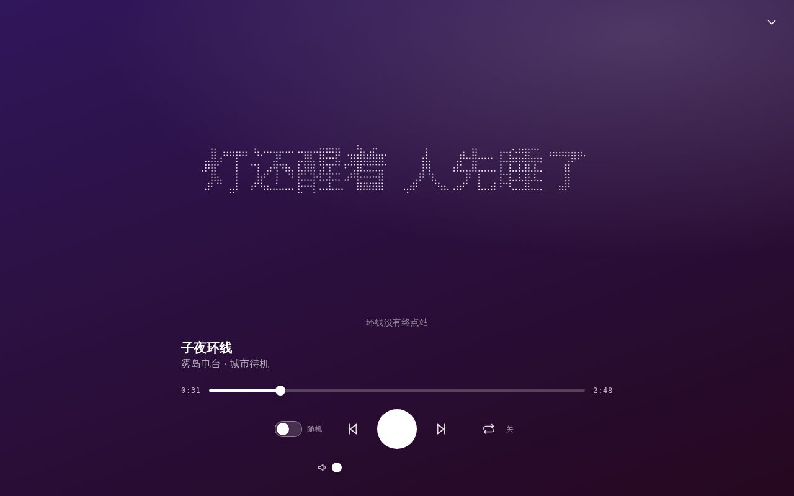
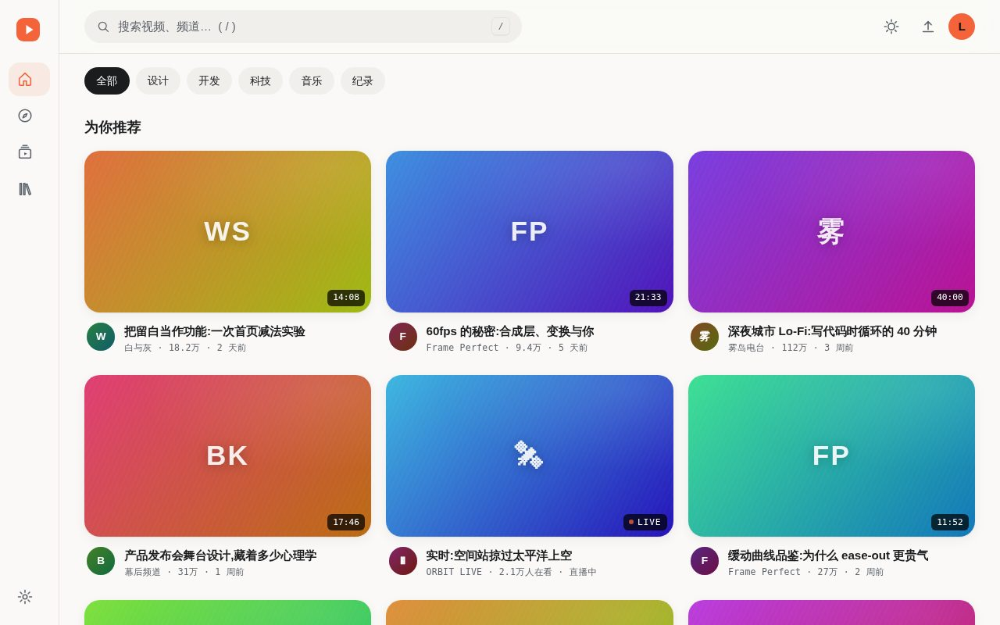
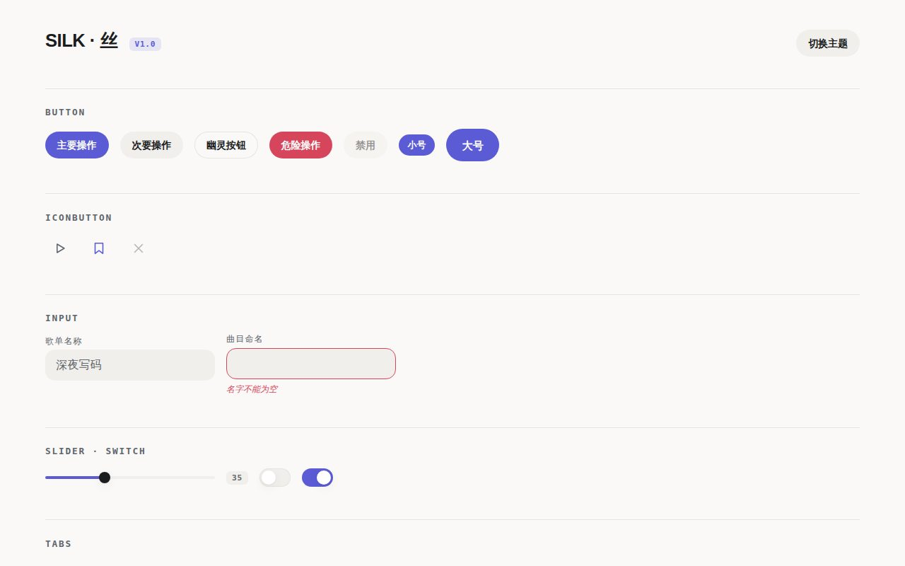
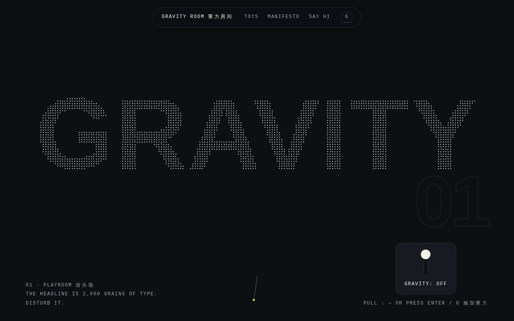

四个前端项目,不用任何第三方库。代码、设计文档和测试都在仓库里。

曲目由种子实时合成,不加载任何音频文件。支持自建歌单、生成自己的曲目;播放页的歌词由粒子构成,会随鼓点散开。

视频平台界面:侧栏、筛选、播放层、迷你播放器。View Transitions 转场,明暗双主题。

14 类常用组件,设计令牌驱动,换品牌只改一个文件。键盘操作和 reduced-motion 都处理过。SONA 的界面就是用它拼的。

标题由两千个粒子组成。拉下重力开关,文字塌下来;再拉一次,逐粒归位。